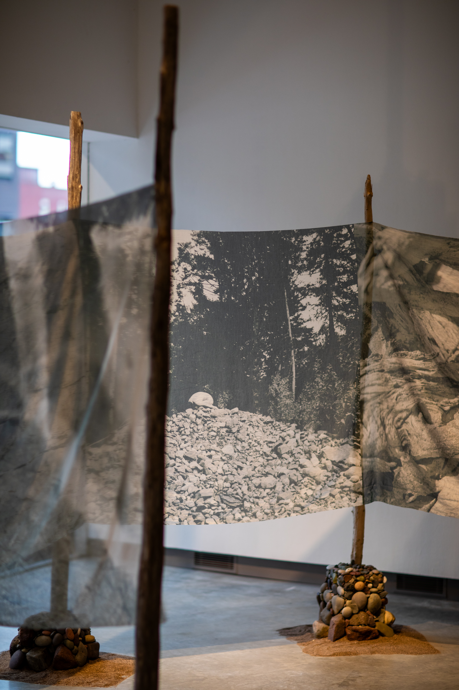
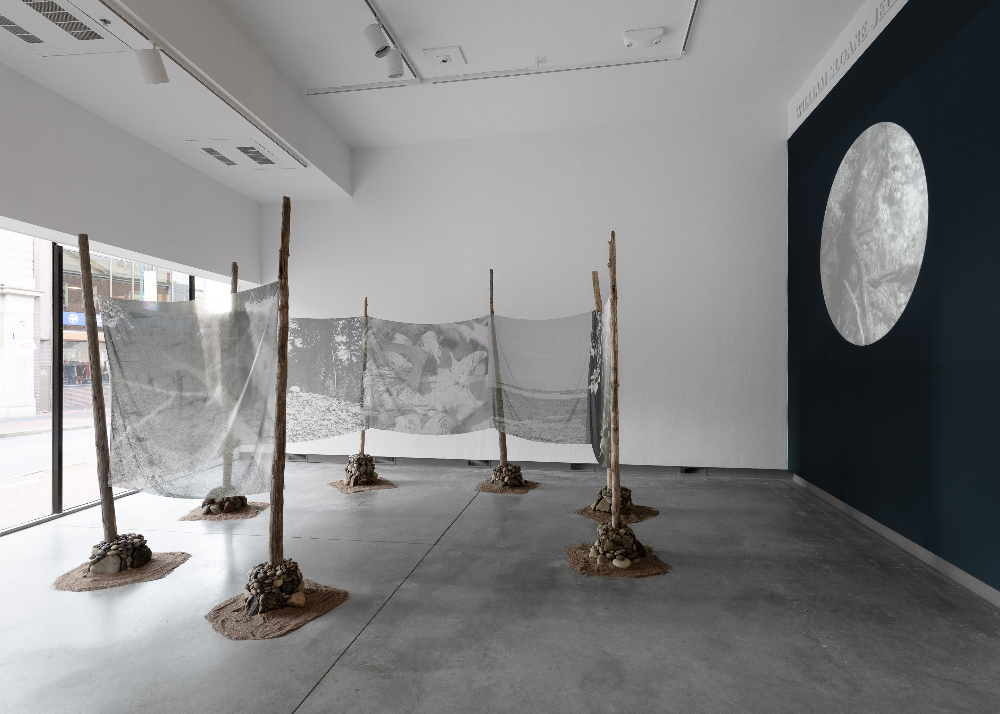
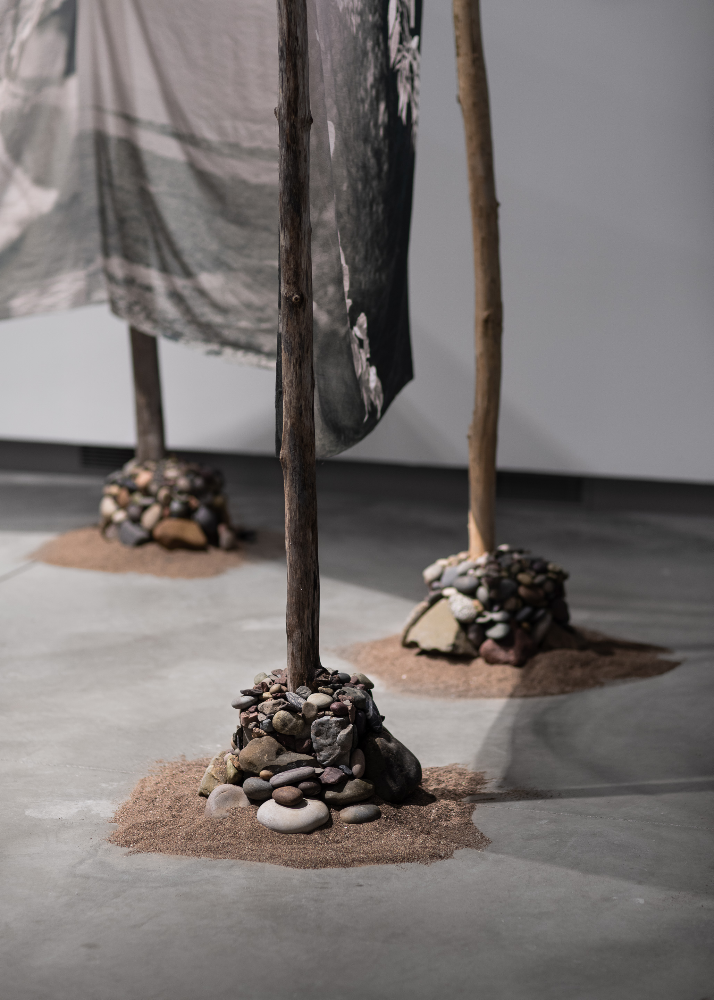

Maya Tihtiyas Attean (born 1994) is a Wabanaki artist living and working in Portland. She
grew up on Alnabe
Menahan, the Penobscot Nation Reservation. Her work has evolved into using photography to create art
reflecting
her ancestry, resiliency, and culture. Her experience growing up on a reservation and then migrating to a
city
has given her a unique perspective upon two worlds that she merges by marrying the techniques of multiple
cultures in her work. She earned her BFA with honors in photography in May 2023 from the Maine College of
Art
and Design. She is currently one of the 2024 BIPOC artist studio awardees at SPACE gallery in Portland.
Mikwidahamin / Portal

Colonialism and capitalism value objectification, commodification, and control over all.
The
colonists began by
dispossessing and disconnecting Indigenous people from the land, collecting our bodies and artifacts along
the
way, now they are focused on collecting our stories. Since we are considered to be a disappearing people,
there
is a desperation to collect what is left, what is rare.

Mikwidahamin / Portal is inspired by a fishing weir that was built many years ago in Sipayik with pieces that
still stand today. The double curved design opening to the west for the fish to swim into during sunrise is
a
perfect example of Wabanaki relationship with the natural world. This weir has always made me think of my
grandfather who I never got a chance to meet. His hands worked on fishing weirs, baskets, and wreaths his
entire
life. I have photographs of him standing in the same spot, where a newer weir is today.
This installation serves as a portal to a different realm of imagining. Can we look at these objects through
the
natural world? Can we look at them through the hands that created them, depended on them, cherished them?
Can we
create new Indigenous futures in which we thrive, connected to our ancestors past and present, without
colonial
constraints?

I create art from the earth, stories, and ways of knowing given by my Wabanaki ancestors for my future
descendants. Our invisible threads of genetic memory connect our people together through time and
space.